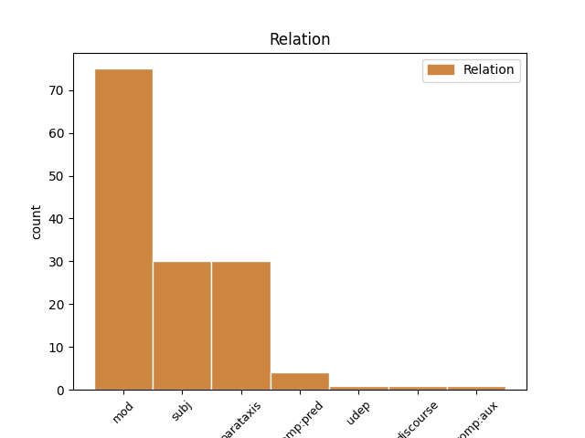
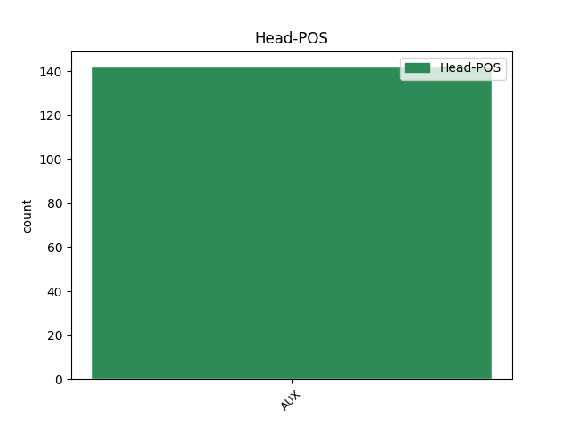
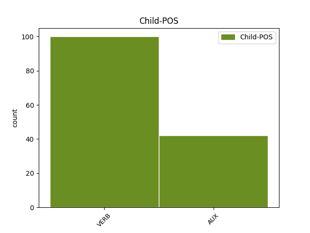

Distribution of features within this leaf



Agreement Rules sorted by frequency.
- When the dependent token is the modifer(mod) of the head token, and the head token is AUX
1 Mas _ _ _ _ 0 _ _ _
2 , _ _ _ _ 0 _ _ _
3 para _ _ _ _ 0 _ _ _
4 que _ _ _ _ 0 _ _ _
5 a _ _ _ _ 0 _ _ _
6 promessa _ _ _ _ 0 _ _ _
7 possa poder VERB _ Mood=Sub|Number=Sing|Person=3|Tense=Pres|VerbForm=Fin 12 mod _ _
8 ser _ _ _ _ 0 _ _ _
9 efetivamente _ _ _ _ 0 _ _ _
10 cumprida _ _ _ _ 0 _ _ _
11 , _ _ _ _ 0 _ _ _
12 é ser AUX _ Mood=Ind|Number=Sing|Person=3|Tense=Pres|VerbForm=Fin 0 _ _ _
13 fundamental _ _ _ _ 0 _ _ _
14 que _ _ _ _ 0 _ _ _
15 se _ _ _ _ 0 _ _ _
16 acredite _ _ _ _ 0 _ _ _
17 que _ _ _ _ 0 _ _ _
18 o _ _ _ _ 0 _ _ _
19 governo _ _ _ _ 0 _ _ _
20 irá _ _ _ _ 0 _ _ _
21 de _ _ _ _ 0 _ _ _
22 fato _ _ _ _ 0 _ _ _
23 cumprí _ _ _ _ 0 _ _ _
24 la _ _ _ _ 0 _ _ _
25 . _ _ _ _ 0 _ _ _
1 « _ _ _ _ 0 _ _ _
2 Quem _ _ _ _ 0 _ _ _
3 adere aderir VERB _ Mood=Ind|Number=Sing|Person=3|Tense=Pres|VerbForm=Fin 8 subj _ _
4 depois _ _ _ _ 0 _ _ _
5 de _ _ _ _ 0 _ _ _
6 a _ _ _ _ 0 _ _ _
7 vitória _ _ _ _ 0 _ _ _
8 é ser AUX _ Mood=Ind|Number=Sing|Person=3|Tense=Pres|VerbForm=Fin 0 _ _ _
9 fisiológico _ _ _ _ 0 _ _ _
10 » _ _ _ _ 0 _ _ _
11 . _ _ _ _ 0 _ _ _
1 George _ _ _ _ 0 _ _ _
2 era ser AUX _ Mood=Ind|Number=Sing|Person=3|Tense=Imp|VerbForm=Fin 0 _ _ _
3 rápido _ _ _ _ 0 _ _ _
4 para _ _ _ _ 0 _ _ _
5 trabalhar _ _ _ _ 0 _ _ _
6 ; _ _ _ _ 0 _ _ _
7 Ira _ _ _ _ 0 _ _ _
8 era ser AUX _ Mood=Ind|Number=Sing|Person=3|Tense=Imp|VerbForm=Fin 2 parataxis _ _
9 meticuloso _ _ _ _ 0 _ _ _
10 e _ _ _ _ 0 _ _ _
11 , _ _ _ _ 0 _ _ _
12 a _ _ _ _ 0 _ _ _
13 as _ _ _ _ 0 _ _ _
14 vezes _ _ _ _ 0 _ _ _
15 , _ _ _ _ 0 _ _ _
16 levava _ _ _ _ 0 _ _ _
17 semanas _ _ _ _ 0 _ _ _
18 em _ _ _ _ 0 _ _ _
19 uma _ _ _ _ 0 _ _ _
20 letra _ _ _ _ 0 _ _ _
21 , _ _ _ _ 0 _ _ _
22 trabalhando _ _ _ _ 0 _ _ _
23 dia _ _ _ _ 0 _ _ _
24 e _ _ _ _ 0 _ _ _
25 noite _ _ _ _ 0 _ _ _
1 Em _ _ _ _ 0 _ _ _
2 um _ _ _ _ 0 _ _ _
3 campeonato _ _ _ _ 0 _ _ _
4 em _ _ _ _ 0 _ _ _
5 que _ _ _ _ 0 _ _ _
6 predominaram _ _ _ _ 0 _ _ _
7 as _ _ _ _ 0 _ _ _
8 defesas _ _ _ _ 0 _ _ _
9 fechadas _ _ _ _ 0 _ _ _
10 , _ _ _ _ 0 _ _ _
11 o _ _ _ _ 0 _ _ _
12 que _ _ _ _ 0 _ _ _
13 fez fazer VERB _ Mood=Ind|Number=Sing|Person=3|Tense=Past|VerbForm=Fin 16 comp:pred _ _
14 a _ _ _ _ 0 _ _ _
15 diferença _ _ _ _ 0 _ _ _
16 foi ser AUX _ Mood=Ind|Number=Sing|Person=3|Tense=Past|VerbForm=Fin 0 _ _ _
17 a _ _ _ _ 0 _ _ _
18 imaginação _ _ _ _ 0 _ _ _
19 ouso _ _ _ _ 0 _ _ _
20 dizer _ _ _ _ 0 _ _ _
21 , _ _ _ _ 0 _ _ _
22 para _ _ _ _ 0 _ _ _
23 horror _ _ _ _ 0 _ _ _
24 de _ _ _ _ 0 _ _ _
25 Parreira _ _ _ _ 0 _ _ _
26 , _ _ _ _ 0 _ _ _
27 a _ _ _ _ 0 _ _ _
28 « _ _ _ _ 0 _ _ _
29 magia _ _ _ _ 0 _ _ _
30 » _ _ _ _ 0 _ _ _
31 de _ _ _ _ 0 _ _ _
32 um _ _ _ _ 0 _ _ _
33 punhado _ _ _ _ 0 _ _ _
34 de _ _ _ _ 0 _ _ _
35 craques _ _ _ _ 0 _ _ _
36 : _ _ _ _ 0 _ _ _
37 Romário _ _ _ _ 0 _ _ _
38 , _ _ _ _ 0 _ _ _
39 Baggio _ _ _ _ 0 _ _ _
40 , _ _ _ _ 0 _ _ _
41 Stoichkov _ _ _ _ 0 _ _ _
42 , _ _ _ _ 0 _ _ _
43 Hagi _ _ _ _ 0 _ _ _
44 , _ _ _ _ 0 _ _ _
45 Brolin _ _ _ _ 0 _ _ _
46 ... _ _ _ _ 0 _ _ _
1 O _ _ _ _ 0 _ _ _
2 essencial _ _ _ _ 0 _ _ _
3 , _ _ _ _ 0 _ _ _
4 em _ _ _ _ 0 _ _ _
5 a _ _ _ _ 0 _ _ _
6 compreensão _ _ _ _ 0 _ _ _
7 de _ _ _ _ 0 _ _ _
8 os _ _ _ _ 0 _ _ _
9 « _ _ _ _ 0 _ _ _
10 jogos _ _ _ _ 0 _ _ _
11 de _ _ _ _ 0 _ _ _
12 poder _ _ _ _ 0 _ _ _
13 » _ _ _ _ 0 _ _ _
14 , _ _ _ _ 0 _ _ _
15 é _ _ _ _ 0 _ _ _
16 conseguir _ _ _ _ 0 _ _ _
17 saber _ _ _ _ 0 _ _ _
18 quem _ _ _ _ 0 _ _ _
19 está estar AUX _ Mood=Ind|Number=Sing|Person=3|Tense=Pres|VerbForm=Fin 0 _ _ _
20 envolvido _ _ _ _ 0 _ _ _
21 e _ _ _ _ 0 _ _ _
22 onde _ _ _ _ 0 _ _ _
23 está estar AUX _ Mood=Ind|Number=Sing|Person=3|Tense=Pres|VerbForm=Fin 19 udep _ _
24 a _ _ _ _ 0 _ _ _
25 força _ _ _ _ 0 _ _ _
26 em _ _ _ _ 0 _ _ _
27 cada _ _ _ _ 0 _ _ _
28 situação _ _ _ _ 0 _ _ _
29 concreta _ _ _ _ 0 _ _ _
30 . _ _ _ _ 0 _ _ _
1 Clinton _ _ _ _ 0 _ _ _
2 apressou _ _ _ _ 0 _ _ _
3 se _ _ _ _ 0 _ _ _
4 a _ _ _ _ 0 _ _ _
5 dizer _ _ _ _ 0 _ _ _
6 que _ _ _ _ 0 _ _ _
7 tais _ _ _ _ 0 _ _ _
8 contactos _ _ _ _ 0 _ _ _
9 não _ _ _ _ 0 _ _ _
10 deviam _ _ _ _ 0 _ _ _
11 ter _ _ _ _ 0 _ _ _
12 acontecido _ _ _ _ 0 _ _ _
13 e _ _ _ _ 0 _ _ _
14 a _ _ _ _ 0 _ _ _
15 sua _ _ _ _ 0 _ _ _
16 porta-voz _ _ _ _ 0 _ _ _
17 , _ _ _ _ 0 _ _ _
18 Dee _ _ _ _ 0 _ _ _
19 Dee _ _ _ _ 0 _ _ _
20 Myers _ _ _ _ 0 _ _ _
21 , _ _ _ _ 0 _ _ _
22 indicou indicar VERB _ Mood=Ind|Number=Sing|Person=3|Tense=Past|VerbForm=Fin 28 comp:aux _ _
23 que _ _ _ _ 0 _ _ _
24 documentos _ _ _ _ 0 _ _ _
25 sobre _ _ _ _ 0 _ _ _
26 esses _ _ _ _ 0 _ _ _
27 encontros _ _ _ _ 0 _ _ _
28 foram ser AUX _ Mood=Ind|Number=Plur|Person=3|Tense=Past|VerbForm=Fin 0 _ _ _
29 compilados _ _ _ _ 0 _ _ _
30 e _ _ _ _ 0 _ _ _
31 seriam _ _ _ _ 0 _ _ _
32 entregues _ _ _ _ 0 _ _ _
33 a _ _ _ _ 0 _ _ _
34 Fiske _ _ _ _ 0 _ _ _
35 , _ _ _ _ 0 _ _ _
36 respeitando _ _ _ _ 0 _ _ _
37 a _ _ _ _ 0 _ _ _
38 intimação _ _ _ _ 0 _ _ _
39 feita _ _ _ _ 0 _ _ _
40 por _ _ _ _ 0 _ _ _
41 este _ _ _ _ 0 _ _ _
42 . _ _ _ _ 0 _ _ _
1 Além _ _ _ _ 0 _ _ _
2 de _ _ _ _ 0 _ _ _
3 aumentar _ _ _ _ 0 _ _ _
4 o _ _ _ _ 0 _ _ _
5 número _ _ _ _ 0 _ _ _
6 de _ _ _ _ 0 _ _ _
7 cassações _ _ _ _ 0 _ _ _
8 , _ _ _ _ 0 _ _ _
9 deve _ _ _ _ 0 _ _ _
10 se _ _ _ _ 0 _ _ _
11 estimular _ _ _ _ 0 _ _ _
12 as _ _ _ _ 0 _ _ _
13 demais _ _ _ _ 0 _ _ _
14 CPIs _ _ _ _ 0 _ _ _
15 sobre _ _ _ _ 0 _ _ _
16 Empreiteiras _ _ _ _ 0 _ _ _
17 , _ _ _ _ 0 _ _ _
18 financiamentos _ _ _ _ 0 _ _ _
19 eleitorais _ _ _ _ 0 _ _ _
20 e _ _ _ _ 0 _ _ _
21 CUT _ _ _ _ 0 _ _ _
22 a _ _ _ _ 0 _ _ _
23 CPI _ _ _ _ 0 _ _ _
24 de _ _ _ _ 0 _ _ _
25 a _ _ _ _ 0 _ _ _
26 CUT _ _ _ _ 0 _ _ _
27 terá _ _ _ _ 0 _ _ _
28 o _ _ _ _ 0 _ _ _
29 dom _ _ _ _ 0 _ _ _
30 de _ _ _ _ 0 _ _ _
31 trazer _ _ _ _ 0 _ _ _
32 a _ _ _ _ 0 _ _ _
33 a _ _ _ _ 0 _ _ _
34 tona _ _ _ _ 0 _ _ _
35 possíveis _ _ _ _ 0 _ _ _
36 desvios _ _ _ _ 0 _ _ _
37 de _ _ _ _ 0 _ _ _
38 a _ _ _ _ 0 _ _ _
39 burocracia _ _ _ _ 0 _ _ _
40 e _ _ _ _ 0 _ _ _
41 de _ _ _ _ 0 _ _ _
42 a _ _ _ _ 0 _ _ _
43 praga _ _ _ _ 0 _ _ _
44 de _ _ _ _ 0 _ _ _
45 o _ _ _ _ 0 _ _ _
46 corporativismo _ _ _ _ 0 _ _ _
47 , _ _ _ _ 0 _ _ _
48 o _ _ _ _ 0 _ _ _
49 que _ _ _ _ 0 _ _ _
50 , _ _ _ _ 0 _ _ _
51 acreditem acreditar VERB _ Mood=Sub|Number=Plur|Person=3|Tense=Pres|VerbForm=Fin 53 discourse _ SpaceAfter=No
52 , _ _ _ _ 0 _ _ _
53 vai ir AUX _ Mood=Ind|Number=Sing|Person=3|Tense=Pres|VerbForm=Fin 0 _ _ _
54 acabar _ _ _ _ 0 _ _ _
55 ajudando _ _ _ _ 0 _ _ _
56 não _ _ _ _ 0 _ _ _
57 apenas _ _ _ _ 0 _ _ _
58 o _ _ _ _ 0 _ _ _
59 PT _ _ _ _ 0 _ _ _
60 mas _ _ _ _ 0 _ _ _
61 a _ _ _ _ 0 _ _ _
62 democracia _ _ _ _ 0 _ _ _
63 . _ _ _ _ 0 _ _ _
Disagree Examples:
1 Hervé _ _ _ _ 0 _ _ _
2 Guibert _ _ _ _ 0 _ _ _
3 em _ _ _ _ 0 _ _ _
4 a _ _ _ _ 0 _ _ _
5 época _ _ _ _ 0 _ _ _
6 era ser AUX _ Mood=Ind|Number=Sing|Person=3|Tense=Imp|VerbForm=Fin 0 _ _ _
7 jornalista _ _ _ _ 0 _ _ _
8 de _ _ _ _ 0 _ _ _
9 o _ _ _ _ 0 _ _ _
10 « _ _ _ _ 0 _ _ _
11 Le _ _ _ _ 0 _ _ _
12 Monde _ _ _ _ 0 _ _ _
13 » _ _ _ _ 0 _ _ _
14 , _ _ _ _ 0 _ _ _
15 e _ _ _ _ 0 _ _ _
16 pediu _ _ _ _ 0 _ _ _
17 autorização _ _ _ _ 0 _ _ _
18 a _ _ _ _ 0 _ _ _
19 o _ _ _ _ 0 _ _ _
20 Instituto _ _ _ _ 0 _ _ _
21 Nacional _ _ _ _ 0 _ _ _
22 de _ _ _ _ 0 _ _ _
23 os _ _ _ _ 0 _ _ _
24 Cegos _ _ _ _ 0 _ _ _
25 para _ _ _ _ 0 _ _ _
26 fazer _ _ _ _ 0 _ _ _
27 uma _ _ _ _ 0 _ _ _
28 reportagem _ _ _ _ 0 _ _ _
29 sobre _ _ _ _ 0 _ _ _
30 « _ _ _ _ 0 _ _ _
31 Os _ _ _ _ 0 _ _ _
32 Cegos _ _ _ _ 0 _ _ _
33 e _ _ _ _ 0 _ _ _
34 a _ _ _ _ 0 _ _ _
35 Cultura _ _ _ _ 0 _ _ _
36 » _ _ _ _ 0 _ _ _
37 , _ _ _ _ 0 _ _ _
38 há- haver VERB _ Mood=Ind|Number=Sing|Person=3|Tense=Pres|VerbForm=Fin 6 parataxis _ MWE=há-_de|MWEPOS=AUX|SpaceAfter=No
39 de _ _ _ _ 0 _ _ _
40 ter _ _ _ _ 0 _ _ _
41 sido _ _ _ _ 0 _ _ _
42 o _ _ _ _ 0 _ _ _
43 que _ _ _ _ 0 _ _ _
44 de _ _ _ _ 0 _ _ _
45 melhor _ _ _ _ 0 _ _ _
46 lhe _ _ _ _ 0 _ _ _
47 ocorreu _ _ _ _ 0 _ _ _
48 como _ _ _ _ 0 _ _ _
49 desculpa _ _ _ _ 0 _ _ _
50 para _ _ _ _ 0 _ _ _
51 passar _ _ _ _ 0 _ _ _
52 lá _ _ _ _ 0 _ _ _
53 uma _ _ _ _ 0 _ _ _
54 semana _ _ _ _ 0 _ _ _
55 . _ _ _ _ 0 _ _ _
1 A _ _ _ _ 0 _ _ _
2 fotografia _ _ _ _ 0 _ _ _
3 foi ser AUX _ Mood=Ind|Number=Sing|Person=3|Tense=Past|VerbForm=Fin 0 _ _ _
4 publicada _ _ _ _ 0 _ _ _
5 em _ _ _ _ 0 _ _ _
6 a _ _ _ _ 0 _ _ _
7 imprensa _ _ _ _ 0 _ _ _
8 de _ _ _ _ 0 _ _ _
9 todo _ _ _ _ 0 _ _ _
10 o _ _ _ _ 0 _ _ _
11 mundo _ _ _ _ 0 _ _ _
12 há haver VERB _ Mood=Ind|Number=Sing|Person=3|Tense=Pres|VerbForm=Fin 3 mod _ _
13 cerca _ _ _ _ 0 _ _ _
14 de _ _ _ _ 0 _ _ _
15 um _ _ _ _ 0 _ _ _
16 ano _ _ _ _ 0 _ _ _
17 , _ _ _ _ 0 _ _ _
18 quando _ _ _ _ 0 _ _ _
19 de _ _ _ _ 0 _ _ _
20 o _ _ _ _ 0 _ _ _
21 massacre _ _ _ _ 0 _ _ _
22 de _ _ _ _ 0 _ _ _
23 Bentalha _ _ _ _ 0 _ _ _
24 , _ _ _ _ 0 _ _ _
25 em _ _ _ _ 0 _ _ _
26 a _ _ _ _ 0 _ _ _
27 Argélia _ _ _ _ 0 _ _ _
28 , _ _ _ _ 0 _ _ _
29 onde _ _ _ _ 0 _ _ _
30 morreram _ _ _ _ 0 _ _ _
31 cerca _ _ _ _ 0 _ _ _
32 de _ _ _ _ 0 _ _ _
33 duas _ _ _ _ 0 _ _ _
34 centenas _ _ _ _ 0 _ _ _
35 de _ _ _ _ 0 _ _ _
36 pessoas _ _ _ _ 0 _ _ _
37 , _ _ _ _ 0 _ _ _
38 em _ _ _ _ 0 _ _ _
39 a _ _ _ _ 0 _ _ _
40 noite _ _ _ _ 0 _ _ _
41 de _ _ _ _ 0 _ _ _
42 22 _ _ _ _ 0 _ _ _
43 para _ _ _ _ 0 _ _ _
44 23 _ _ _ _ 0 _ _ _
45 de _ _ _ _ 0 _ _ _
46 Setembro _ _ _ _ 0 _ _ _
47 . _ _ _ _ 0 _ _ _
1 Como _ _ _ _ 0 _ _ _
2 o _ _ _ _ 0 _ _ _
3 PÚBLICO _ _ _ _ 0 _ _ _
4 pôde poder VERB _ Mood=Ind|Number=Sing|Person=3|Tense=Past|VerbForm=Fin 12 mod _ _
5 constatar _ _ _ _ 0 _ _ _
6 em _ _ _ _ 0 _ _ _
7 o _ _ _ _ 0 _ _ _
8 local _ _ _ _ 0 _ _ _
9 , _ _ _ _ 0 _ _ _
10 a _ _ _ _ 0 _ _ _
11 ideia _ _ _ _ 0 _ _ _
12 é ser AUX _ Mood=Ind|Number=Sing|Person=3|Tense=Pres|VerbForm=Fin 0 _ _ _
13 transformar _ _ _ _ 0 _ _ _
14 , _ _ _ _ 0 _ _ _
15 em _ _ _ _ 0 _ _ _
16 esse _ _ _ _ 0 _ _ _
17 curto _ _ _ _ 0 _ _ _
18 espaço _ _ _ _ 0 _ _ _
19 de _ _ _ _ 0 _ _ _
20 tempo _ _ _ _ 0 _ _ _
21 , _ _ _ _ 0 _ _ _
22 um _ _ _ _ 0 _ _ _
23 terreno _ _ _ _ 0 _ _ _
24 que _ _ _ _ 0 _ _ _
25 ainda _ _ _ _ 0 _ _ _
26 se _ _ _ _ 0 _ _ _
27 encontra _ _ _ _ 0 _ _ _
28 revolvido _ _ _ _ 0 _ _ _
29 e _ _ _ _ 0 _ _ _
30 enlameado _ _ _ _ 0 _ _ _
31 em _ _ _ _ 0 _ _ _
32 uma _ _ _ _ 0 _ _ _
33 área _ _ _ _ 0 _ _ _
34 relvada _ _ _ _ 0 _ _ _
35 cruzada _ _ _ _ 0 _ _ _
36 por _ _ _ _ 0 _ _ _
37 passeios _ _ _ _ 0 _ _ _
38 e _ _ _ _ 0 _ _ _
39 estadias _ _ _ _ 0 _ _ _
40 . _ _ _ _ 0 _ _ _
1 Desvalorizando _ _ _ _ 0 _ _ _
2 , _ _ _ _ 0 _ _ _
3 por _ _ _ _ 0 _ _ _
4 outro _ _ _ _ 0 _ _ _
5 lado _ _ _ _ 0 _ _ _
6 , _ _ _ _ 0 _ _ _
7 a _ _ _ _ 0 _ _ _
8 posição _ _ _ _ 0 _ _ _
9 assumida _ _ _ _ 0 _ _ _
10 por _ _ _ _ 0 _ _ _
11 o _ _ _ _ 0 _ _ _
12 deputado _ _ _ _ 0 _ _ _
13 independente _ _ _ _ 0 _ _ _
14 José _ _ _ _ 0 _ _ _
15 Magalhães _ _ _ _ 0 _ _ _
16 , _ _ _ _ 0 _ _ _
17 que _ _ _ _ 0 _ _ _
18 considera _ _ _ _ 0 _ _ _
19 « _ _ _ _ 0 _ _ _
20 errada _ _ _ _ 0 _ _ _
21 » _ _ _ _ 0 _ _ _
22 a _ _ _ _ 0 _ _ _
23 proposta _ _ _ _ 0 _ _ _
24 de _ _ _ _ 0 _ _ _
25 Manuel _ _ _ _ 0 _ _ _
26 Carrilho _ _ _ _ 0 _ _ _
27 -- _ _ _ _ 0 _ _ _
28 « _ _ _ _ 0 _ _ _
29 Se _ _ _ _ 0 _ _ _
30 ele _ _ _ _ 0 _ _ _
31 disse _ _ _ _ 0 _ _ _
32 isso _ _ _ _ 0 _ _ _
33 , _ _ _ _ 0 _ _ _
34 o _ _ _ _ 0 _ _ _
35 problema _ _ _ _ 0 _ _ _
36 é ser AUX _ Mood=Ind|Number=Sing|Person=3|Tense=Pres|VerbForm=Fin 0 _ _ _
37 de _ _ _ _ 0 _ _ _
38 ele _ _ _ _ 0 _ _ _
39 , _ _ _ _ 0 _ _ _
40 foram ser AUX _ Mood=Ind|Number=Plur|Person=3|Tense=Past|VerbForm=Fin 36 comp:pred _ _
41 as _ _ _ _ 0 _ _ _
42 suas _ _ _ _ 0 _ _ _
43 palavras _ _ _ _ 0 _ _ _
44 -- _ _ _ _ 0 _ _ _
45 , _ _ _ _ 0 _ _ _
46 Jorge _ _ _ _ 0 _ _ _
47 Coelho _ _ _ _ 0 _ _ _
48 reafirmou _ _ _ _ 0 _ _ _
49 a _ _ _ _ 0 _ _ _
50 sua _ _ _ _ 0 _ _ _
51 confiança _ _ _ _ 0 _ _ _
52 em _ _ _ _ 0 _ _ _
53 o _ _ _ _ 0 _ _ _
54 ministro _ _ _ _ 0 _ _ _
55 de _ _ _ _ 0 _ _ _
56 a _ _ _ _ 0 _ _ _
57 Cultura _ _ _ _ 0 _ _ _
58 . _ _ _ _ 0 _ _ _
1 Desvalorizando _ _ _ _ 0 _ _ _
2 , _ _ _ _ 0 _ _ _
3 por _ _ _ _ 0 _ _ _
4 outro _ _ _ _ 0 _ _ _
5 lado _ _ _ _ 0 _ _ _
6 , _ _ _ _ 0 _ _ _
7 a _ _ _ _ 0 _ _ _
8 posição _ _ _ _ 0 _ _ _
9 assumida _ _ _ _ 0 _ _ _
10 por _ _ _ _ 0 _ _ _
11 o _ _ _ _ 0 _ _ _
12 deputado _ _ _ _ 0 _ _ _
13 independente _ _ _ _ 0 _ _ _
14 José _ _ _ _ 0 _ _ _
15 Magalhães _ _ _ _ 0 _ _ _
16 , _ _ _ _ 0 _ _ _
17 que _ _ _ _ 0 _ _ _
18 considera _ _ _ _ 0 _ _ _
19 « _ _ _ _ 0 _ _ _
20 errada _ _ _ _ 0 _ _ _
21 » _ _ _ _ 0 _ _ _
22 a _ _ _ _ 0 _ _ _
23 proposta _ _ _ _ 0 _ _ _
24 de _ _ _ _ 0 _ _ _
25 Manuel _ _ _ _ 0 _ _ _
26 Carrilho _ _ _ _ 0 _ _ _
27 -- _ _ _ _ 0 _ _ _
28 « _ _ _ _ 0 _ _ _
29 Se _ _ _ _ 0 _ _ _
30 ele _ _ _ _ 0 _ _ _
31 disse _ _ _ _ 0 _ _ _
32 isso _ _ _ _ 0 _ _ _
33 , _ _ _ _ 0 _ _ _
34 o _ _ _ _ 0 _ _ _
35 problema _ _ _ _ 0 _ _ _
36 é ser AUX _ Mood=Ind|Number=Sing|Person=3|Tense=Pres|VerbForm=Fin 0 _ _ _
37 de _ _ _ _ 0 _ _ _
38 ele _ _ _ _ 0 _ _ _
39 , _ _ _ _ 0 _ _ _
40 foram _ _ _ _ 0 _ _ _
41 as _ _ _ _ 0 _ _ _
42 suas _ _ _ _ 0 _ _ _
43 palavras _ _ _ _ 0 _ _ _
44 -- _ _ _ _ 0 _ _ _
45 , _ _ _ _ 0 _ _ _
46 Jorge _ _ _ _ 0 _ _ _
47 Coelho _ _ _ _ 0 _ _ _
48 reafirmou reafirmar VERB _ Mood=Ind|Number=Sing|Person=3|Tense=Past|VerbForm=Fin 36 parataxis _ _
49 a _ _ _ _ 0 _ _ _
50 sua _ _ _ _ 0 _ _ _
51 confiança _ _ _ _ 0 _ _ _
52 em _ _ _ _ 0 _ _ _
53 o _ _ _ _ 0 _ _ _
54 ministro _ _ _ _ 0 _ _ _
55 de _ _ _ _ 0 _ _ _
56 a _ _ _ _ 0 _ _ _
57 Cultura _ _ _ _ 0 _ _ _
58 . _ _ _ _ 0 _ _ _